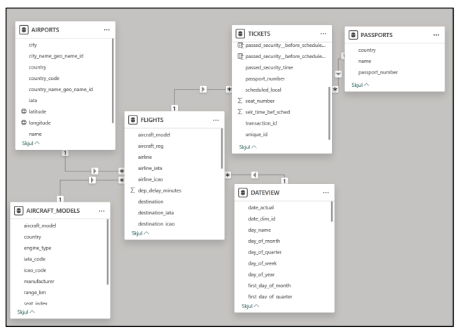

Et enkelt analyseunivers bygget på flights, tickets og passagerdata.
Modellen kobler syntetiske passagerer og billetter med flightdata og referencetabeller, så KPI'er for flow, kapacitet og punctualitet kan måles på tværs af hele casen.

Semantisk struktur
Flights, tickets, passports, airports og dateview.

Rapportlogik
Filtrering og KPI'er på tværs af drift og passagerflow.
Kernetabeller
Afgange
Status, tider, destinationer, gate og flytype.
Passagerkobling
Billetter, sæder, check-in-type og tidsstempler.
Aircraft og airports
Kapacitet, flymetadata og lufthavnsoplysninger.